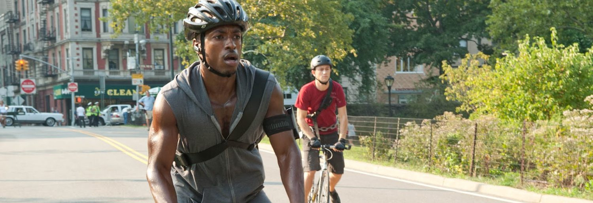

Aprende Autodefensa Básica:
Considera tomar clases de autodefensa para situaciones de riesgo.
- Mantén la calma y observa a tu alrededor, identifica puntos de escape y testigos potenciales.
- No confrontes al ladrón si puedes evitarlo, entregar tu bicicleta es menos importante que tu seguridad, pero si tiene la oportunidad defiéndete hazlo siempre y cuando la posibilidad esté a tu favor.
- Usa objetos cotidianos como defensa. Si es necesario, usa objetos cercanos (como una mochila o una botella de agua) para defenderte o distraer al ladrón y ganar tiempo para escapar.
- Usa la voz. Grita fuerte para atraer la atención de otros o usa un silbato, esto puede disuadir al ladrón.

NÚMERO DE EMERGENCIA
123